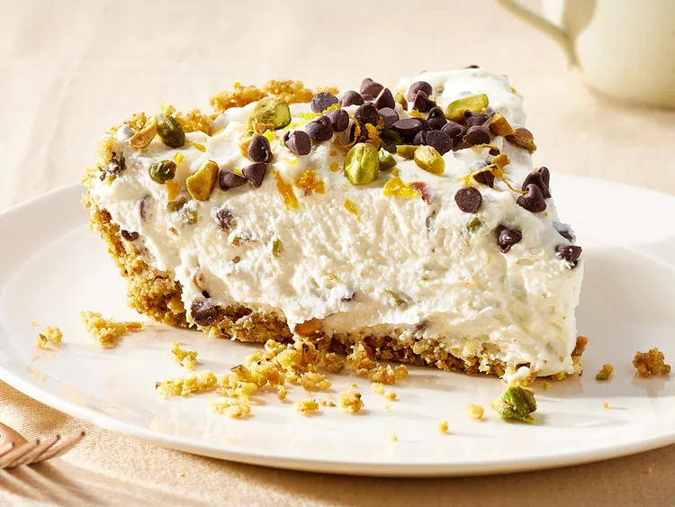

No-Bake Cannoli Pie

Description
This no-bake cannoli pie tastes sweet, nutty and has lots of fresh citrus flavor from orange zest. It is made with a waffle cone crust which is similar to cannoli shells.
Ingredients (for 1 serving)
Crust
- 8 waffle cones, slightly crushed
- 1/2 cup roasted pistachios
- 1 tablespoon granulated sugar
- 7 tablespoons unsalted butter, melted
- cooking spray
Filling
- 1/4 cup salted roasted pistachios, plus chopped pistachios for garnish
- 1 1/2 cups whole milk ricotta
- 1 cup mascarpone cheese
- 1 cup unsifted powdered sugar
- 1/2 cup miniature semisweet chocolate chips, plus more for garnish
- 2 teaspoons grated orange zest, plus more for garnish
- 1 teaspoon vanilla extract
- 1/4 teaspoon kosher salt
- 1 cup heavy whipping cream
Steps
- Gather all ingredients.
- Prepare the Crust: Pulse waffle cones, pistachios, and sugar in a food processor until mixture is finely ground, about 20 (1-second) pulses. Add butter, and pulse until mixture holds together when squeezed, about 10 (1-second) pulses, stopping to scrape down sides as needed.
- Lightly coat a 9-inch deep-dish pie plate with cooking spray, and transfer waffle cone mixture to prepared pie plate, pressing evenly into bottom and up sides of pie plate. Freeze Crust, uncovered, until set, about 15 minutes.
- Meanwhile, prepare the Filling: Finely chop pistachios, and transfer to a medium bowl. Add ricotta, mascarpone, powdered sugar, chocolate chips, orange zest, vanilla, and salt. Stir until combined, and set aside at room temperature.
- Beat heavy cream with an electric mixer on medium-high speed until medium peaksform, 2 to 3 minutes. Spoon whipped cream into ricotta mixture, and gently folduntil just combined.
- Spoon ricotta mixture into prepared Crust, and spread in an even layer with a rubber spatula or offset spatula. Cover with plastic wrap, and refrigerate, uncovered, until set, at least 4 hours or up to 8 hours.
- Remove pie from refrigerator; remove plastic wrap, and garnish with additional chopped pistachios, chocolate chips, and orange zest.